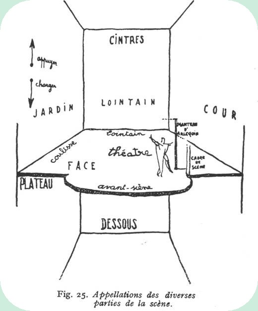

LES DISCIPLINES ARTISTIQUES
|
||
Musique: |
 |
Arts Plastiques: Cette discipline aborde les pratiques du dessin, de la peinture et de l'expression en volume. Il permet d'aboutir à une production mettant en évidence les capacités techniques, le sens de la réflexion et la personnalité de chaque élève. (en savoir plus...) |
Art Danse: |
 |
Cinéma-Audiovisuel: C'est un espace de liberté créatrice et de découverte du 7ème Art, ouvert à tous les élèves, quelle que soit leur section. Sous la conduite d'un professeur et d'un professionnel, les élèves peuvent s'initier aux techniques cinématographiques de base et produire plusieurs courts métrages. (en savoir plus...) |
Théâtre : |
 | Histoire des Arts : |
Informations pratiques communes à toutes les disciplines artistiques :
Classe de première et de terminale : Le choix peut se faire sur l'enseignement obligatoire associé à la filière littéraire (5 heures) et/ou l'option facultative (3 heures), ouverte aux élèves de L, S, ES et STT. Il est possible de choisir un enseignement artistique obligatoire à la fin de la seconde pour tous les élèves entrant en première L Les enseignements obligatoires sont dotés au bac d'un coefficient 6 (à comparer avec la philosophie 7, les lettres 5, l'histoire-géographie 4, les langues 4). Pour l'option facultative, ce sont les points au-dessus de la moyenne qui sont pris en compte. (coefficient 1 ou 2 suivant les cas). |
||
Pour
tout renseignement, n'hésitez pas à contacter le secrétariat du lycée,
les professeurs responsables des disciplines artistiques. |
||